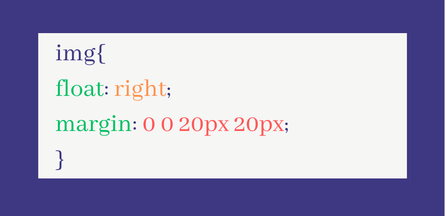
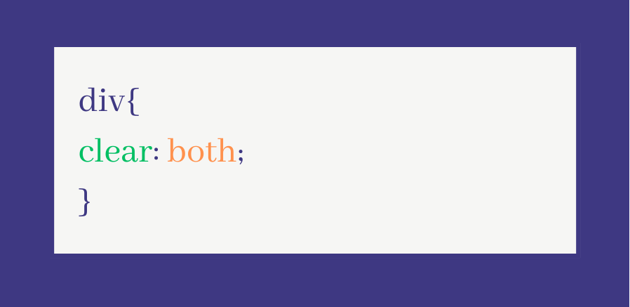
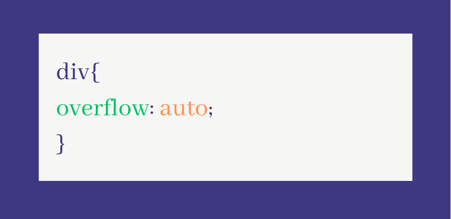

All About Float, Clear, Overflow
 CSS float is a property that allows an element to be taken out of the normal flow of the document and placed to the left or right of its container. This can be used for various layout purposes, such as creating multi-column layouts or positioning images.The float property can take three values: left, right, or none. When an element is floated, it is moved to the left or right of its container, and any content that comes after it in the HTML document will flow around it. If an element is floated, it will also become a block-level element, even if it was previously an inline-level element. On the right hand side of this container is an example of how to use the float property in your CSS in CSS. In this example, we are floating an img element to the right of its container, and adding a margin of 20 pixels to the bottom and right of the element. One issue that can arise when using float is that elements may not clear properly, which can result in unexpected layout behavior.
 The clear property can be used to resolve the issue mentioned above. The clear property specifies which sides of an element should be clear of floating elements. It can take four values: left, right, both, or none.For example, to ensure that an element does not flow around a floated element, you can use the following CSS shown in the picture on the left hand side of this container. This will cause the div element to clear both the left and right sides of any floated elements. Another issue that can arise when using float is that the height of the container element may not adjust to the height of the floated elements inside it. This can be addressed by using the overflow property.
 The overflow property specifies how to handle content that overflows the content area of an element. It can take several values, but the most commonly used values are hidden,
auto, and scroll. For example, to ensure that a container element adjusts its height to the height of its floated child elements, you can use the following CSS shown in the image. This will cause the div element to automatically adjust
its height to fit its floated child elements, and add scrollbars if necessary to allow scrolling through the overflow content.
That concludes the discussion about this layout. I hope you have learned something today. Goodbye, future
web developers, and here's to creating more awesome website layouts!